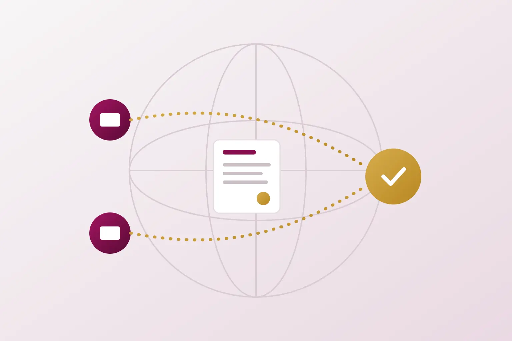

India is one of the largest markets and manufacturing bases for technology, pharmaceuticals and consumer products. For US and European companies, an Indian patent is often the right that matters most when products are made, sold or copied here.
PRASA IP works with in house patent teams, foreign patent firms and founders who need patents in India. We handle Indian filing, prosecution and reporting through registered Indian patent agents and IP attorneys, and we report in the format that US and European teams expect. This page explains how a foreign applicant enters India and where Indian practice differs from USPTO and EPO practice.
Two routes into India
PCT national phase
Most foreign applicants reach India through the Patent Cooperation Treaty. The Indian national phase must be entered within 31 months from the priority date. Treat this as a fixed deadline. Relief after a missed national phase date is limited and uncertain, so the docket should carry an early internal reminder.
Paris Convention application
An applicant that first filed in the United States, at the EPO or in a European national office can file directly in India within 12 months and claim that priority. A US provisional application can serve as the priority filing. This route suits applicants who need an Indian application quickly or who did not file a PCT application.
What we need to enter India
- The application as published, or the claims you want to pursue, in English.
- Applicant and inventor names, addresses and nationalities.
- A power of attorney in favour of the Indian patent agent, in Form 26.
- Proof of the applicant's right to apply, such as an assignment from the inventors, where the applicant is a company.
- A certified copy of the priority document for a Paris Convention filing, where it is not available to the Patent Office electronically.
- Details of corresponding applications in other countries for Form 3.
- An address for service in India, which is normally the agent's address.
Official fees are calculated on the number of pages and claims, with additional fees above 30 pages and 10 claims. A preliminary amendment before entry can reduce cost and bring the claims into a form that suits Indian law. Companies that meet the definition of a startup or small entity in the Rules, including qualifying foreign entities, pay reduced fees.
Request examination at entry
For applications filed on or after 15 March 2024, the request for examination is due within 31 months from the priority date. That is the same date as the PCT national phase deadline. In practice, most national phase applications therefore request examination when they enter India. Older PCT applications with an international filing date before 15 March 2024 had a 48 month limit.
Where Indian practice differs from US and European practice
Section 3 exclusions
Section 3(k) excludes mathematical and business methods, computer programmes per se and algorithms. Claims that pass in the United States can fail here if they read as software in the abstract. The Patent Office and the Delhi High Court look for a technical effect or technical contribution, which is closer to EPO reasoning than to US subject matter eligibility law. Section 3(d) restricts claims to new forms of known substances unless they show enhanced efficacy. Section 3(i) excludes methods of treatment of humans and animals, so US method of treatment claims usually need to be recast.
Section 8 disclosure of foreign applications
India requires applicants to disclose corresponding foreign applications in Form 3 and to keep that information current. Under the 2024 amendments, an updated statement is due within three months of the First Examination Report. The Controller can also require details of foreign search and examination. Failure to comply is a ground for opposition and revocation, so we track every family member and update Form 3 at the right time.
Claim amendments
Section 59 allows amendments only by way of disclaimer, correction, explanation or incorporation of actual fact. The amended matter must be disclosed in substance in the specification, and amended claims must fall within the scope of the existing claims. Courts have taken a more liberal view of that second condition before grant, but examiners still apply section 59 closely. Claims copied from a granted US or EP patent are a useful starting point, but they still need to be checked against the Indian specification and Indian objections.
Prosecution timeline in India
- Examination. The First Examination Report sets out objections. The applicant has six months to respond, extendable by up to three months.
- Hearing. If objections remain, the Controller generally offers a hearing, which can be held by video conference. Written submissions follow within fifteen days.
- Opposition. Third parties can file a pre grant opposition after publication. Grant cannot occur until six months after publication.
- Grant and term. The patent lasts 20 years from the international filing date for a PCT national phase application, or from the Indian filing date for a direct filing.
After grant
Foreign patentees carry the same duties as Indian ones. Annual renewal fees keep the patent in force. A statement of working in Form 27 is due once for every period of three financial years, within six months after the period ends. Section 146 allows the Controller to ask for further information about commercial working. Missing these obligations can weaken the patent in licensing or enforcement.
Patent disputes in India are heard by the High Courts and district courts under the Commercial Courts Act, 2015. The Delhi High Court has had a dedicated Intellectual Property Division since 2021, and the Madras High Court set up one in 2023. Both have developed a substantial body of patent case law, including on standard essential patents.
How we work with US and European teams
- Instructions accepted from in house counsel, foreign patent firms and founders.
- Reporting in English with clear recommendations, deadlines and cost estimates for each action.
- Responses prepared by professionals with engineering and legal training, who understand US and EPO prosecution histories and can use them in India.
- Docketing of Indian deadlines alongside the rest of the family, including Form 3 and Form 27.
Indian companies filing abroad can read about our US, EP and PCT patent support. For the Indian procedure from first filing to grant, see our step by step guide to patent filing in India.
Frequently asked questions
Can a US or European company file a patent in India without an Indian agent?
A foreign applicant must give an address for service in India. In practice, foreign companies appoint a registered Indian patent agent, who files and prosecutes the application and receives official correspondence.
Is the 31 month national phase deadline extendable?
It should be treated as fixed. Some relief provisions exist, but they are narrow and their outcome is uncertain.
Can we use our granted US or EP claims in India?
Often, with adjustments. The claims must be supported by the Indian specification, must avoid section 3 exclusions and must meet the limits on amendment in section 59.
Do we need to file Form 27 every year?
No. Since the 2024 amendments, Form 27 is filed once for every period of three financial years after grant.